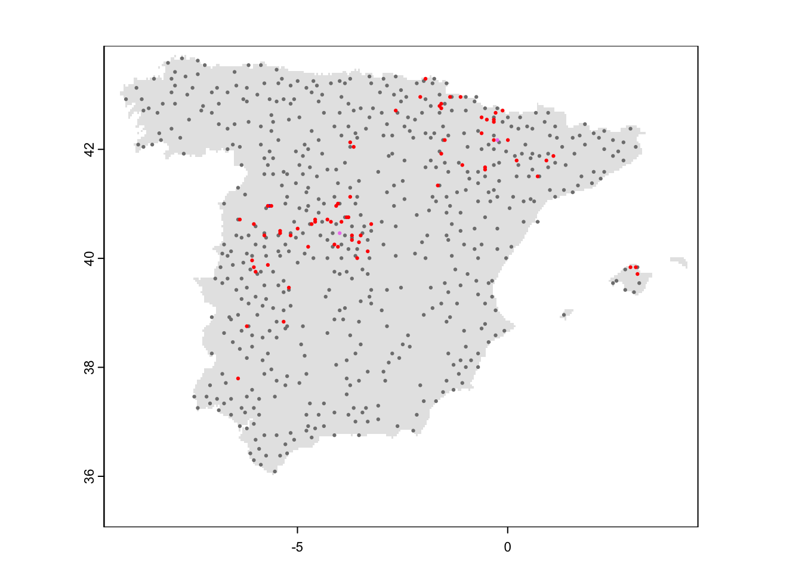
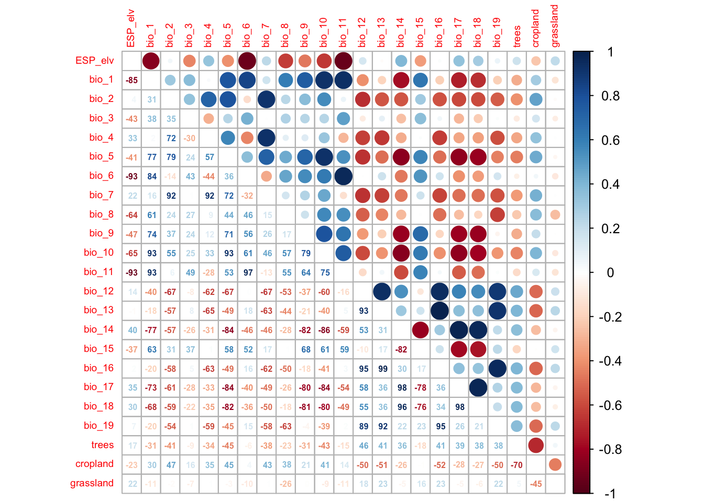

RStudio project
Open the RStudio project that we created in the previous session. I recommend to use this RStudio project for the entire module and within the RStudio project create separate R scripts for each session.
# Session Occ-4: Simple occupancy models and save the file
in your folder “scripts” within your project folder, e.g. as
“Occ4_SimpleOccModel.R”We have already heard that occupancy (or occupancy-detection) models can deal with imperfect detection in species distribution modelling (Guillera-Arroita 2017; Kéry and Royle 2015). In the following, we will focus on false negative errors (not recording a species although present) as these tend to be more common in surveys than false positive errors (recording a species although absent). Accounting for this imperfect detection requires a hierarchical model structure in which we describe two separate processes:
the system or state process that represents the underlying biological state, here the presence/absence of a species at site i:
\(z_i \sim Bernoulli(\psi_i)\)
the observation process that describes the data observation or collection, here the probability of observing a species during survey j if the species is indeed present at site i:
\(y_{ii}|z_i \sim Bernoulli(z_i*p_{ij})\)
where
\(\psi_i\) .. the probability of occupancy (species presence) at site i
\(z_i\) .. the true state of occupancy of site i
\(p_{ij}\) .. the detection probability of the study species at site i during survey j
\(y_{ij}\) .. the observed data (our observation of presence/absence) at site i during survey j
Thus, we want to predict the probability of detecting a species conditional on the probability of occupancy of that species. Each process can be described as a function of environmental covariates (predictor variables). The site covariates describe how occupancy varies across environmental gradients, the survey covariates describe how detection varies across environmental gradients.
To tease apart the state process and the observation process, we need information about how detections took place (Guillera-Arroita 2017). These typically stem from repeat visits at a site (over time or by several observers), from multiple independent detection methods, or from spatial subsampling. If the species is observed (\(y=1\)), then also the true state of occupancy is a presence (\(z=1\)). However, if the species is not observed (\(y=0\)), the true state of occupancy could be either a presence (\(z=1\)) but the species was simply not observed (with probability of \(1-p\)), or the true state could indeed by an absence (\(z=0\)).
When repeat visits are undertaken, these should be close enough in time to avoid any violation of the closure assumption. This assumes that occupancy remains constant between the repeat visits, e.g. no emigration or colonisation takes place over this time frame.
In this course, we will use two linked GLMs (generalised linear models) to describe the state process and the observation process.
Generalised linear models (GLMs) are useful when our response variable is not normally distributed. Remember that ordinary least squares (OLS) linear regression assumes normally distributed data within the ranges (\(-\infty,\infty\)). OLS regression looks like this
\[E(Y|X)=\beta X+\epsilon\]
where \(E(Y|X)\) is the conditional mean, meaning the expected value of the response \(Y\) given the environmental predictors \(X\) (Hosmer and Lemeshow 2013). \(X\) is the matrix of predictors (including the intercept), \(\beta\) are the coefficients for the predictors, and \(\epsilon\) is the (normally distributed) error term. \(\beta X\) is referred to as the linear predictor.
When we want to predict species occupancy based on environment, then the conditional mean \(E(Y|X)\) is binary and bounded between 0 (absence) and 1 (presence). Thus, the assumptions of OLS regression are not met. GLMs are more flexible regression models that allow the response variable to follow other distributions. Similar to OLS regression, we also fit a linear predictor \(\beta X\) and then relate this linear predictor to the mean of the response variable using a link function. The link function is used to transform the response to normality. In case of a binary response, we typically use the logit link (or sometimes the probit link). The conditional mean is then given by:
\[E(Y|X) = \pi (X) = \frac{e^{\beta X+\epsilon}}{1+e^{\beta X+\epsilon}}\]
The logit transformation is defined as: \[g(X) = ln \left( \frac{\pi (X)}{1-\pi (X)} \right) = \beta X+\epsilon\]
The trick is that the logit, g(X), is now linear in its parameters, is continuous and may range (\(-\infty,\infty\)). GLMs with a logit link are also called logistic regression models.
We have already prepared a dataset with repeat observations for the red kite in Practical 2 and merged it with environmental data in Practical 3. These data contain the observed detection/non-detection of red kites in Spain in 5 km cells for the months April to June. I have further spatially thinned the data; you can download the resulting dataset here. Also download the 5km mask of Spain (we created this in Practical 2, available here). Please store all data in your “data” folder.
Please be aware that our oversimplified workflow for collating the eBird data does not correspond to best practices. The eBird best practices and more elaborate workflows are described here: https://cornelllabofornithology.github.io/ebird-best-practices. The main purpose of the present practicals is to exemplify the workflow and basic functionality of occupancy models using freely available data.
# Load species data:
load('data/redkite_env_thinned.RData')
summary(redkite_env_thinned)## x y cell month4
## Min. :-9.079 Min. :36.09 Min. : 1740 Min. :0.00000
## 1st Qu.:-5.579 1st Qu.:39.30 1st Qu.:13705 1st Qu.:0.00000
## Median :-3.746 Median :40.92 Median :24301 Median :0.00000
## Mean :-3.377 Mean :40.63 Mean :26624 Mean :0.03675
## 3rd Qu.:-1.329 3rd Qu.:42.21 3rd Qu.:37417 3rd Qu.:0.00000
## Max. : 3.129 Max. :43.67 Max. :63491 Max. :1.00000
## month5 month6 ID ESP_elv
## Min. :0.00000 Min. :0.00000 Min. : 8 Min. : -2.84
## 1st Qu.:0.00000 1st Qu.:0.00000 1st Qu.: 998 1st Qu.: 338.48
## Median :0.00000 Median :0.00000 Median :1917 Median : 625.52
## Mean :0.03828 Mean :0.04288 Mean :1909 Mean : 655.62
## 3rd Qu.:0.00000 3rd Qu.:0.00000 3rd Qu.:2848 3rd Qu.: 897.56
## Max. :1.00000 Max. :1.00000 Max. :3698 Max. :2267.32
## bio_1 bio_2 bio_3 bio_4
## Min. : 2.069 Min. : 6.643 Min. :29.15 Min. :337.0
## 1st Qu.:11.440 1st Qu.:10.018 1st Qu.:37.87 1st Qu.:567.8
## Median :13.297 Median :11.093 Median :39.53 Median :623.1
## Mean :13.194 Mean :11.079 Mean :39.58 Mean :606.8
## 3rd Qu.:15.223 3rd Qu.:12.274 3rd Qu.:41.21 3rd Qu.:660.0
## Max. :18.476 Max. :15.122 Max. :46.41 Max. :762.8
## bio_5 bio_6 bio_7 bio_8
## Min. :18.46 Min. :-9.220 Min. :16.32 Min. :-0.8033
## 1st Qu.:27.14 1st Qu.:-0.460 1st Qu.:25.95 1st Qu.: 7.5933
## Median :29.67 Median : 1.132 Median :28.58 Median : 9.8760
## Mean :29.28 Mean : 1.261 Mean :28.02 Mean :10.1266
## 3rd Qu.:32.19 3rd Qu.: 3.036 3rd Qu.:30.63 3rd Qu.:12.9427
## Max. :36.18 Max. : 8.200 Max. :36.14 Max. :19.4513
## bio_9 bio_10 bio_11 bio_12
## Min. : 2.585 Min. :10.70 Min. :-5.193 Min. : 218.2
## 1st Qu.:17.205 1st Qu.:18.96 1st Qu.: 4.472 1st Qu.: 426.1
## Median :20.058 Median :21.46 Median : 6.286 Median : 540.0
## Mean :19.108 Mean :21.09 Mean : 6.327 Mean : 641.1
## 3rd Qu.:23.494 3rd Qu.:23.68 3rd Qu.: 8.332 3rd Qu.: 725.8
## Max. :26.275 Max. :26.28 Max. :12.669 Max. :1816.6
## bio_13 bio_14 bio_15 bio_16
## Min. : 29.88 Min. : 0.00 Min. :18.29 Min. : 86.24
## 1st Qu.: 55.56 1st Qu.: 7.00 1st Qu.:29.24 1st Qu.:147.88
## Median : 74.60 Median :15.88 Median :37.06 Median :202.80
## Mean : 84.25 Mean :20.17 Mean :39.51 Mean :230.25
## 3rd Qu.: 99.00 3rd Qu.:27.96 3rd Qu.:47.83 3rd Qu.:272.40
## Max. :258.76 Max. :77.12 Max. :77.80 Max. :713.12
## bio_17 bio_18 bio_19 trees
## Min. : 12.92 Min. : 16.20 Min. : 65.56 Min. :0.00000
## 1st Qu.: 40.48 1st Qu.: 44.00 1st Qu.:115.08 1st Qu.:0.05137
## Median : 65.84 Median : 75.12 Median :170.48 Median :0.19214
## Mean : 81.11 Mean : 89.74 Mean :200.33 Mean :0.28622
## 3rd Qu.:112.88 3rd Qu.:124.52 3rd Qu.:248.76 3rd Qu.:0.49534
## Max. :260.16 Max. :263.44 Max. :713.12 Max. :0.98086
## cropland grassland
## Min. :0.000000 Min. :0.02362
## 1st Qu.:0.005316 1st Qu.:0.19864
## Median :0.099340 Median :0.27477
## Mean :0.247443 Mean :0.28716
## 3rd Qu.:0.461840 3rd Qu.:0.36127
## Max. :0.974008 Max. :0.67191# Read in 5km mask of Spain:
library(terra)## terra 1.7.29mask_Esp_5km <- terra::rast('data/mask_Esp_5km.tif')
# Map the data:
plot(mask_Esp_5km, col='grey90', legend=F)
points(redkite_env_thinned[,1:2],pch=19,col=c('grey50','red','violet','blue')[as.factor(rowSums(redkite_env_thinned[,4:6]))], cex=0.3)
We can get a naïve occupancy estimate for the red kite by simply counting the number of 5 km cells where at least one presence was recorded during the repeat visits and dividing by the total number of sites surveyed:
# Naive occupancy estimate:
sum(apply(redkite_env_thinned[,4:6], 1, max)) / nrow(redkite_env_thinned)## [1] 0.1117917The naïve estimate is that red kite occupy 11% of the sites. However, due to false negatives (failure to detect the species although present) the true occupancy might be underestimated.
To estimate the detection probability for the red kite and the true
occupancy probability, we use the unmarked package (Fiske and Chandler 2011). For this, we first
have to create an object of class unmarkedFrameOccu
library(unmarked)
# Create unmarked object containing the detection and non-detection data:
occ_redkite <- unmarkedFrameOccu(y=redkite_env_thinned[,4:6])Next, we fit a single season occupancy model using the function
occu() in the unmarked package. This function
requires a double formula that specifies the survey and the site
covariates (predictor variables), first for the detection process and
second for the state (occupancy) process:
occu(~survey covariates ~site covariates). Here, we will
not add any survey or site covariates, meaning that we simply estimate a
null model:
# Fitting simple single season occupancy models without survey or site covariates (intercept model):
m_occ_null <- occu(~1 ~ 1, occ_redkite)
# Summarise model output:
summary(m_occ_null)##
## Call:
## occu(formula = ~1 ~ 1, data = occ_redkite)
##
## Occupancy (logit-scale):
## Estimate SE z P(>|z|)
## 1.06 1.81 0.587 0.557
##
## Detection (logit-scale):
## Estimate SE z P(>|z|)
## -2.88 0.504 -5.72 1.04e-08
##
## AIC: 652.9764
## Number of sites: 653
## optim convergence code: 0
## optim iterations: 32
## Bootstrap iterations: 0The estimates for the occupancy probability and the detection probability are provided at logit scale and we need to back transform them to get probability estimates between 0 and 1.
# Get detection probability estimate:
(p_det <- backTransform(m_occ_null, "det"))## Backtransformed linear combination(s) of Detection estimate(s)
##
## Estimate SE LinComb (Intercept)
## 0.0529 0.0253 -2.88 1
##
## Transformation: logistic# Get occupancy probability estimate:
(p_psi <- backTransform(m_occ_null, "state"))## Backtransformed linear combination(s) of Occupancy estimate(s)
##
## Estimate SE LinComb (Intercept)
## 0.743 0.345 1.06 1
##
## Transformation: logisticWe see that our detection probability is very low at 5%, which probably leads to severe underestimation of occupancy. And indeed, our estimated occupancy probability is 74% and thus much higher than our naïve estimate of 11%.
Most of the time we are probably more interested in how far site covariates affect occupancy probability or even in how far survey covariates affect detection probability. Our data set already contains environmental data. Now, we want to add this environmental information to our occupancy-detection model to explain how occupancy (or detection) varies across environmental gradients.
In our first set of models, we assume that detection probability is constant in space and only test the effect of different site covariates in occupancy. For simplicity, we focus only on two site covariates (bio1 = mean annual temperature, and tree cover). Later, we will learn how deal with multiple site (or survey) covariates.
To help stabilize the numerical optimisation algorithm, we recommend
standardising the covariates. This can easily be done using the base
function scale().
# Standardise all covariates to have a mean=0 and standard deviation sd=1:
redkite_env_thinned[,-c(1:7)] <- scale(redkite_env_thinned[,-c(1:7)])
# Create unmarked object containing the detection and non-detection data and the covariate data:
occ_env_redkite <- unmarkedFrameOccu(y = redkite_env_thinned[,4:6], siteCovs = redkite_env_thinned[,-c(1:7)])We use the same method as we did for our null model only that we now
add the name(s) of site covariates to the formula (the names are the
column names of our data set). Remember that the formula in the
occu() function of unmarked takes the form:
occu(~survey covariates ~site covariates).
# Fitting simple single season occupancy models without survey or site covariates (intercept model):
m_occ_bio1 <- occu(~1 ~ bio_1, occ_env_redkite)
# Summarise model output:
summary(m_occ_bio1)##
## Call:
## occu(formula = ~1 ~ bio_1, data = occ_env_redkite)
##
## Occupancy (logit-scale):
## Estimate SE z P(>|z|)
## (Intercept) 55.4 75.9 0.729 0.466
## bio_1 -46.8 65.2 -0.717 0.473
##
## Detection (logit-scale):
## Estimate SE z P(>|z|)
## -3.08 0.117 -26.3 1.18e-152
##
## AIC: 638.1646
## Number of sites: 653
## optim convergence code: 0
## optim iterations: 119
## Bootstrap iterations: 0We can also fit quadratic or higher polynomial terms (check
?poly) and interactions between predictors:
- the term I()indicates that a variable should be
transformed before being used as predictor in the formula
- poly(x,n) creates a polynomial of degree \(n\): \(x + x^2 +
... + x^n\)
- x1:x2 creates a two-way interaction term between
variables x1 and x2, the linear terms of x1 and x2 would have to be
specified separately
- x1*x2 creates a two-way interaction term between
variables x1 and x2 plus their linear terms
Let’s play with these notations a little bit.
# Add quadratic term:
occu(~1 ~ bio_1 + I(bio_1^2), occ_env_redkite)
# Add quadratic term using poly():
occu(~1 ~ poly(bio_1, degree=2, raw=T), occ_env_redkite)
# Add another covariate:
occu(~1 ~ bio_1 + cropland, occ_env_redkite)
# Add quadratic terms for both covariates:
occu(~1 ~ bio_1 + I(bio_1^2) + cropland + I(cropland^2), occ_env_redkite)Finally, let’s add a covariate to assess how detection probability
varies with elevation. Note that this variable is also part of our site
covariates in the unmarkedFrameOccu object. This has the
simple reason that this variable does not vary across repeated surveys
as would e.g. be the case for wind data. We can nevertheless also use
those covariates that are constant across all surveys to explain spatial
variation in detection probability.
(m_occdet_bio1q_cropq <- occu(~ESP_elv ~ bio_1 + I(bio_1^2) + cropland + I(cropland^2), occ_env_redkite))##
## Call:
## occu(formula = ~ESP_elv ~ bio_1 + I(bio_1^2) + cropland + I(cropland^2),
## data = occ_env_redkite)
##
## Occupancy:
## Estimate SE z P(>|z|)
## (Intercept) 1.662 0.957 1.74 0.08251
## bio_1 -0.708 0.427 -1.66 0.09764
## I(bio_1^2) -0.346 0.178 -1.95 0.05156
## cropland 1.218 0.526 2.32 0.02046
## I(cropland^2) -1.445 0.505 -2.86 0.00424
##
## Detection:
## Estimate SE z P(>|z|)
## (Intercept) -2.43 0.268 -9.072 1.17e-19
## ESP_elv 0.14 0.223 0.628 5.30e-01
##
## AIC: 638.0071But how to decide which model best explains the observed data? A
useful statistic is the AIC, the Akaike information criterion,
which is part of the standard output of the unmarked
models. It is based on the deviance and thus conveys information about
how closely the model fits the data. It is calculated from the
log-likelihood \(L\) and penalises for
the number of parameters \(p\)
(regression coefficients) in the model:
\[AIC = -2 \times L + 2 \times (p+1)\] AIC thus takes into account model complexity. In general, lower values of AIC are preferable. But caution, AIC cannot be interpreted in absolute terms and cannot be compared between different data sets. It can, however, provide a meaningful way to compare different candidate models for the same data set.
We can simply extract the AIC from the model objects.
# Extract AIC
m_occ_bio1@AIC## [1] 638.1646m_occdet_bio1q_cropq@AIC## [1] 638.0071The unmarked package also contains a function
modSel() function for computing AIC-based model selection.
For this, we have to provide a list of models to compare. Let’s
systematically compare the different predictor variables to explain
occupancy and detection. To do so, we have to add all candidate models
to a fitList object. Note that all models in the list have
to be based on the same data frame. We thus also have to refit our null
model.
# Collect the candidate models in a named list. Try to use meaningful names of the models
cand_models <- fitList(
"p(1) psi(1)" = occu(~1 ~ 1, occ_env_redkite),
"p(1) psi(bio1)" = occu(~1 ~ bio_1, occ_env_redkite),
"p(1) psi(bio1.sqr)" = occu(~1 ~ bio_1 + I(bio_1^2), occ_env_redkite),
"p(1) psi(cropland)" = occu(~1 ~ cropland, occ_env_redkite),
"p(1) psi(cropland.sqr)" = occu(~1 ~ cropland + I(cropland^2), occ_env_redkite),
"p(1) psi(bio1 + cropland)" = occu(~1 ~ bio_1 + cropland, occ_env_redkite),
"p(1) psi(bio1.sqr + cropland)" = occu(~1 ~ bio_1 + I(bio_1^2) + cropland, occ_env_redkite),
"p(1) psi(bio1.sqr + cropland.sqr)" = occu(~1 ~ bio_1 +I(bio_1^2) + cropland + I(cropland^2), occ_env_redkite),
"p(elev) psi(1)" = occu(~ESP_elv ~ 1, occ_env_redkite),
"p(elev) psi(bio1)" = occu(~ESP_elv ~ bio_1, occ_env_redkite),
"p(elev) psi(bio1.sqr)" = occu(~ESP_elv ~ bio_1 + I(bio_1^2), occ_env_redkite),
"p(elev) psi(cropland)" = occu(~ESP_elv ~ cropland, occ_env_redkite),
"p(elev) psi(cropland.sqr)" = occu(~ESP_elv ~ cropland + I(cropland^2), occ_env_redkite),
"p(elev) psi(bio1 + cropland)" = occu(~ESP_elv ~ bio_1 + cropland, occ_env_redkite),
"p(elev) psi(bio1.sqr + cropland)" = occu(~ESP_elv ~ bio_1 + I(bio_1^2) + cropland, occ_env_redkite),
"p(elev) psi(bio1.sqr + cropland.sqr)" = occu(~ESP_elv ~ bio_1 +I(bio_1^2) + cropland + I(cropland^2), occ_env_redkite)
)
# Compute the summary output for model selection. When explicitly stating which candidate model is the null model, then a Nagelkerke R-square is computed.
(m_sel <- modSel(cand_models, nullmod="p(1) psi(1)"))## Warning in sqrt(diag(vcov(x, altNames = TRUE))): NaNs produced## nPars AIC delta AICwt cumltvWt
## p(1) psi(bio1.sqr + cropland.sqr) 6 636.41 0.00 3.1e-01 0.31
## p(elev) psi(cropland.sqr) 5 637.20 0.79 2.1e-01 0.52
## p(elev) psi(bio1.sqr + cropland.sqr) 7 638.01 1.59 1.4e-01 0.65
## p(1) psi(bio1) 3 638.16 1.75 1.3e-01 0.78
## p(1) psi(bio1.sqr) 4 639.09 2.68 8.1e-02 0.86
## p(elev) psi(bio1) 4 640.40 3.99 4.2e-02 0.91
## p(elev) psi(bio1.sqr) 5 640.61 4.20 3.8e-02 0.94
## p(1) psi(cropland.sqr) 4 641.89 5.48 2.0e-02 0.96
## p(1) psi(bio1 + cropland) 4 642.37 5.96 1.6e-02 0.98
## p(1) psi(bio1.sqr + cropland) 5 643.23 6.82 1.0e-02 0.99
## p(elev) psi(bio1 + cropland) 5 644.30 7.89 6.0e-03 0.99
## p(elev) psi(bio1.sqr + cropland) 6 645.23 8.82 3.8e-03 1.00
## p(elev) psi(cropland) 4 647.74 11.32 1.1e-03 1.00
## p(elev) psi(1) 3 652.74 16.32 8.8e-05 1.00
## p(1) psi(1) 2 652.98 16.56 7.8e-05 1.00
## p(1) psi(cropland) 3 654.98 18.56 2.9e-05 1.00
## Rsq
## p(1) psi(bio1.sqr + cropland.sqr) 5.9e-02
## p(elev) psi(cropland.sqr) 5.2e-02
## p(elev) psi(bio1.sqr + cropland.sqr) 6.0e-02
## p(1) psi(bio1) 4.0e-02
## p(1) psi(bio1.sqr) 4.3e-02
## p(elev) psi(bio1) 4.0e-02
## p(elev) psi(bio1.sqr) 4.4e-02
## p(1) psi(cropland.sqr) 3.6e-02
## p(1) psi(bio1 + cropland) 3.5e-02
## p(1) psi(bio1.sqr + cropland) 3.8e-02
## p(elev) psi(bio1 + cropland) 3.5e-02
## p(elev) psi(bio1.sqr + cropland) 3.8e-02
## p(elev) psi(cropland) 2.2e-02
## p(elev) psi(1) 5.4e-03
## p(1) psi(1) 0.0e+00
## p(1) psi(cropland) 7.7e-07The output provides different useful summary statistics.
delta refers to the \(\Delta
AIC\) and is the difference in AIC between different models,
relative to the smallest AIC found in the candidate model set, meaning
relative to the best model. When the number of candidate models is
reasonably small, the \(\Delta AIC\)
can be interpreted straightforwardly. A \(\Delta AIC\) between 0 and 2 indicates
substantial support for the candidate models, meaning they are
essentially as good as the best model, while values between 4-7 indicate
considerably less support compared to the best model, and a value
greater than 10 indicates no support for the candidate model (Burnham and Anderson 2002).AICwt refers to the Akaike weight, which is
the relative likelihood of a model compared to all other models in the
candidate model set. These weights are normalised to sum to 1 and are
typically interpreted as probability that the model is the best
performing (Burnham and Anderson
2002).cumltvWt refers to the cumulative Akaike weights from
top to bottom.Rsq is computed when the null model is specified in the
modSel() function and is the Nagelkerke \(R_{N}^{2}\), generalization of the
coefficient of determination \(R^2\)
(Nagelkerke 1991). Typically, \(R^2\) values in logistic regression are
rather low (Hosmer and Lemeshow
2013).Often, there is no obvious best model and several models seem
similarly plausible. In such situations, model averaging can be useful
for combining several plausible models and averaging parameter estimates
or predictions (Burnham and Anderson 2002;
Dormann et al. 2018). We will not specifically cover model
averaging here. For those interested in model averaging, there are
several packages that allow model averaging of occupancy models fit with
the unmarked package, for example using the packages
AICmodavg (Mazerolle 2023) or
MuMIn (Bartoń 2022).
GLMs (and many other statistical models) have problems to fit stable parameters if two or more predictor variables are highly correlated, resulting in so-called multicollinearity issues (Dormann et al. 2013). Thus, before we can add more covariates to our models, we need to check for multi-collinearity and select an initical set of covariates that are only weakly correlated. Then, we can fit our occupancy models including multiple predictors and with differently complex response shapes. This model can then be further simplified by removing “unimportant” predictors.
Different approaches exist for quantifying and removing collinearity (Dormann et al. 2013), and we here only introduce a single, simple and pragmatic yet efficient approach based on pairwise correlation.
We first check for pairwise correlations among predictors. Generally, correlations below |r|<0.7 are considered unproblematic (or below |r|<0.5 as more conservative threshold).
library(corrplot)
# We first estimate a correlation matrix from the covariates
# We use Spearman rank correlation coefficient, as we do not know
# whether all variables are normally distributed.
cor_mat <- cor(occ_env_redkite@siteCovs, method='spearman')
# We can visualise this correlation matrix. For better visibility,
# we plot the correlation coefficients as percentages.
corrplot.mixed(cor_mat, tl.pos='lt', tl.cex=0.6, number.cex=0.5, addCoefasPercent=T)
If no prior knowledge is available on the importance of different predictors, then Dormann et al. (2013) suggest to assess univariate variable importance in terms of AIC (Akaike information criterion) or explained deviance. In practice, this means that we fit separate occupancy-detection models for each predictor, assess the importance of the predictor in terms of AIC and then rank the variables according to their univariate importance. To do so, we first need to identify all pairs of variables that have correlation |r|>0.7 and remove the less important variable. Dormann et al. (2013) call this the select07 method.
A select07_unm() function is implemented in the package
mecofun along with some other useful functions for
teaching. We first have to install the package from the Univ. Potsdam
gitlab:
library(devtools)
devtools::install_git("https://gitup.uni-potsdam.de/macroecology/mecofun.git")Now, you can load the package and try out the function. Also, check
out the help pages for ?select07_unm.
library(mecofun)
# Run select07()
var_sel <- select07_unm(occ_env_redkite, names(occ_env_redkite@siteCovs), threshold=0.7)
# Check out the structure of the resulting object:
str(var_sel)## List of 3
## $ AIC : Named num [1:23] 600 634 636 637 638 ...
## ..- attr(*, "names")= chr [1:23] "bio_3" "bio_2" "bio_9" "bio_17" ...
## $ cor_mat : num [1:23, 1:23] 1 -0.8538 0.0425 -0.4327 0.3346 ...
## ..- attr(*, "dimnames")=List of 2
## .. ..$ : chr [1:23] "ESP_elv" "bio_1" "bio_2" "bio_3" ...
## .. ..$ : chr [1:23] "ESP_elv" "bio_1" "bio_2" "bio_3" ...
## $ pred_sel: chr [1:10] "bio_3" "bio_2" "bio_9" "bio_11" ...# We extract the names of the weakly correlated predictors ordered by the univariate variable importance in terms of AIC:
pred_sel <- var_sel$pred_selSo, we have now reduced our set of covariates that are only weakly correlated. Now, we need to decide whether all of the remaining should be included in the final model, or if we select only a few, for example the two most important variables in terms of univariate AIC. As a rule of thumb, we should have ten observations (presence sites or absence sites) per covariate that is included in the model (Guisan, Thuiller, and Zimmermann 2017).
# Number of presences
sum(apply(redkite_env_thinned[,4:6], 1, max))## [1] 73# Number of absence
nrow(redkite_env_thinned) - sum(apply(redkite_env_thinned[,4:6], 1, max))## [1] 580In our case, we have fewer presence sites, which will thus be the limiting number.
Exercise: